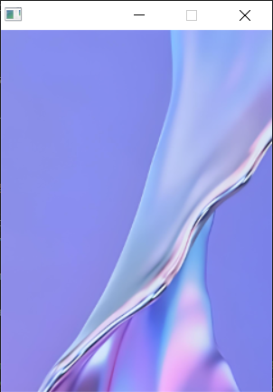

页面¶
创建页面¶
SGL使用页面来管理所有的控件，在创建控件之前，必须先创建一个页面，然后再在这个页面上创建控件，如下代码用来创建一个页面：
1sgl_obj_t *main_page = sgl_page_create();
然后我们就可以在这个页面上创建一个控件：
1 ...
2 sgl_icon_t btn_icon = {.bitmap = test_bitmap, .width = 16, .height = 15};
3 sgl_style_t btn_style = {.body_color = SGL_RED, .text_color = SGL_WHITE, .radius = 25};
4 sgl_obj_t* btn = sgl_button_create(main_page);
5 sgl_obj_set_size(btn, 100, 50);
6 ...
设置页面背景图¶
有时候，我们希望页面具备背景图，这样看起来更美观，首先我们需要定义一个sgl_img_t结构体，用来指定背景图片，如下：
1extern unsigned char bg_test[460800];
2sgl_img_t bg_img = {.bitmap = bg_test, .width = 240, .height = 320,};
上面定义了一个bg_img的结构体，该结构体的bitmap字段指定了图片的位图，位图数组可以使用取模工具来生成，width指定了图片的宽，height指定了图片的宽，
备注
目前SGL的背景图片的宽和高必须和屏幕的宽和高相同，如果不相同可能会出现乱码，这里需要特别注意。
我们可以使用如下函数来设置页面的背景，如下：
1sgl_page_set_background(main_page, &bg_img);
然后我们将这个页面作为活动页面，即当前页面显示在屏幕上，使用如下函数：
1sgl_page_set_active(main_page);
编译后，运行就可以看到如下图片
